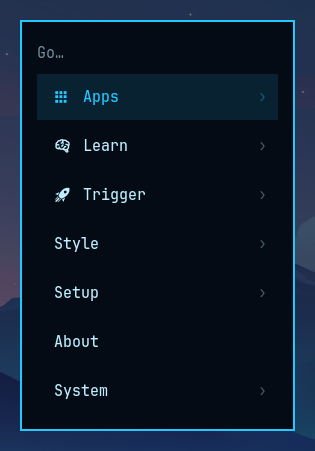
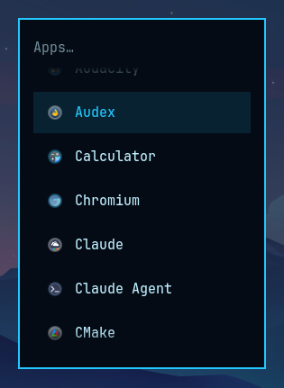
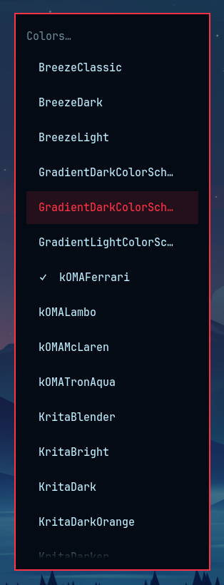

Type and launch
Search applications and menu actions. Use the arrow keys to navigate, Enter to launch or open a submenu, Backspace to go back, and Escape to close.

KDE Plasma 6 · Free & open source
Omarchy’s launcher, recreated for KDE Plasma. The familiar compact menu, dimmed desktop, and keyboard-driven navigation—with actions adapted for KDE.
I wanted the Omarchy launcher experience on my KDE desktop. kOMA Launcher closely recreates its look, layout, and behavior, with native Plasma settings and controls.
Search applications and menu actions. Use the arrow keys to navigate, Enter to launch or open a submenu, Backspace to go back, and Escape to close.
Browse Apps, Learn, Trigger, Style, Setup, About, and System. Reach screenshots, sharing tools, keybindings, desktop settings, and power actions.
The launcher opens on the focused screen. Its border and selection follow your Plasma highlight color, and its actions use KDE tools.
Add or override menu entries in ~/.config/komalauncher/menu.jsonc. The optional command can open specific submenus from separate shortcuts.



Download version 0.1.0 and use Plasma’s widget manager to Install Widget From Local File. Add kOMA Launcher to a panel, then assign a shortcut in its Keyboard Shortcuts settings. Keep the widget on a panel so shortcuts can reach it.
Download the widget → Source & support →Requires KDE Plasma 6 and a Nerd Font for menu icons. Some actions require optional tools such as Spectacle, Tesseract, zbar, KDE Connect, or LocalSend. The optional komalauncher command is installed separately from the source repository and requires qdbus6.
Based on Omarchy by David Heinemeier Hansson / Basecamp. This KDE recreation is maintained by Columbia Foundry and is not an official Omarchy release. The original attribution and license notices are preserved under the MIT license.
Part of kOMA (KDE + Omarchy), and available as a standalone widget.